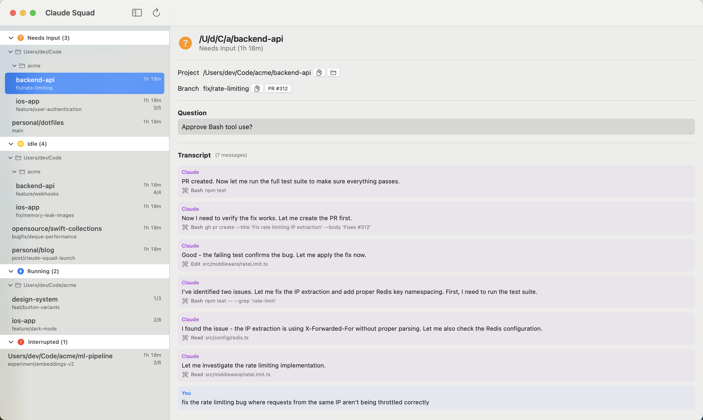
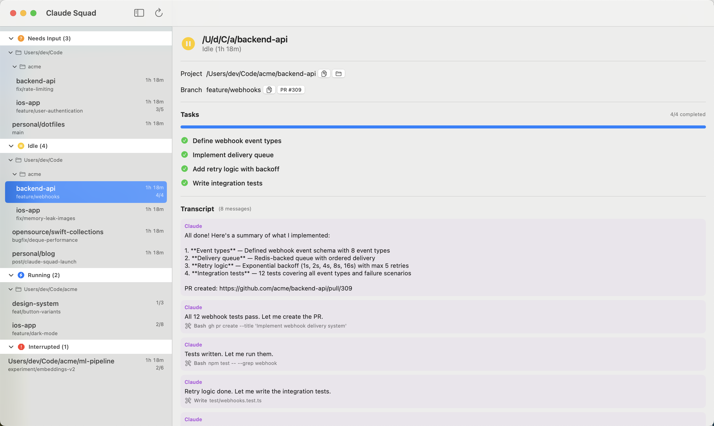
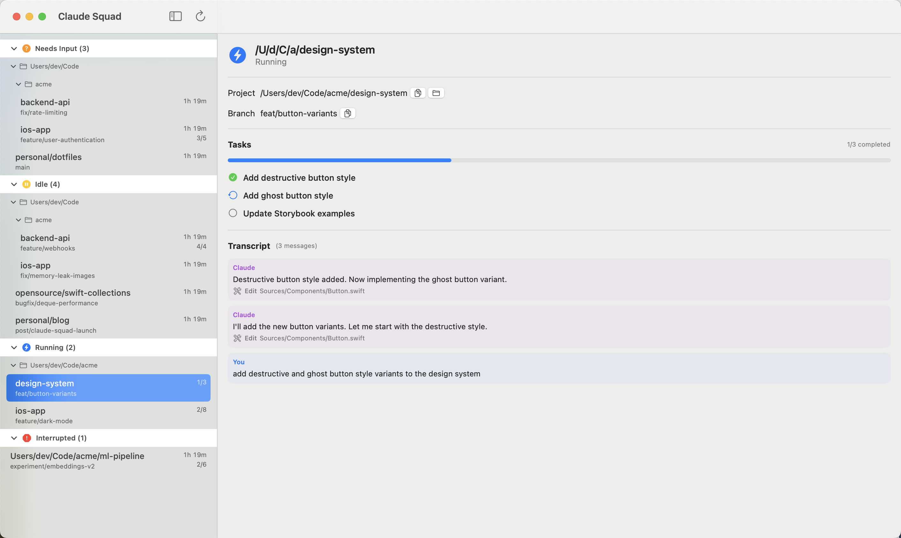
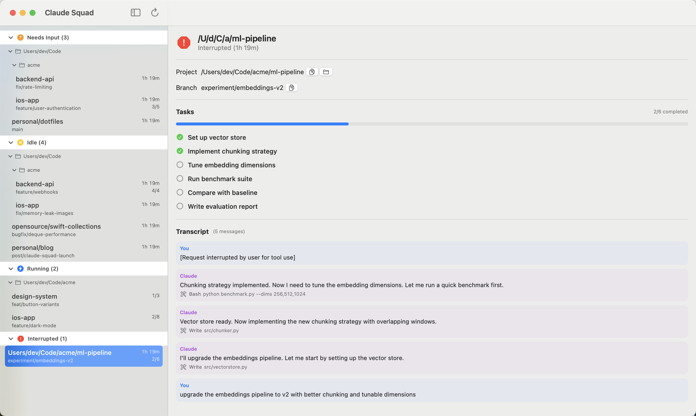

A native macOS app that watches every Claude Code CLI session running on your machine. See who needs input, read transcripts, and jump to PRs — without switching terminals.
$ brew tap armcknight/tools $ brew trust armcknight/tools $ brew install --cask armcknight/tools/claude-squad
Or download the latest release and drag it to Applications.
Requires macOS 14 Sonoma or later. Signed with a Developer ID certificate and notarized by Apple, so it opens without a Gatekeeper warning.
Stop juggling terminal tabs. See every session's status instantly.
Sessions needing your approval or answer are grouped at the top. See the exact question Claude is asking, along with the full transcript and PR link, so you can respond without hunting through terminals.

When Claude finishes a turn it goes idle. See the tasks it completed, the PR it created, and the full conversation — so you know exactly where things stand before giving the next instruction.

See which sessions are actively running, what tasks are in progress, and how far along they are. No need to switch to the terminal just to check if Claude is still working.

If a session was cancelled or hit an error, you'll see it immediately. Review the transcript to understand what happened and decide whether to restart or continue from where it left off.

Keep using Claude Code in your terminal exactly as you do today. No plugins, no configuration, no changes to your workflow.
The app reads Claude's local session files to detect every active session on your machine. It identifies the project, branch, and current status.
A global shortcut — ⌘⇧C by default, and configurable in Settings — brings the window forward from whatever app you are in, so a status check never costs you a window hunt.
Free, open source, and built for developers who run multiple Claude Code sessions.
$ brew install --cask armcknight/tools/claude-squad